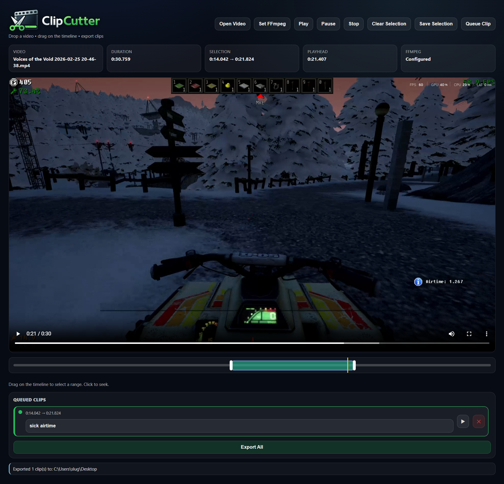

Timeline selection
Drag to select the exact range. Click to seek, refine with handles.
Clip Cutter is a lightweight desktop app for slicing recorded videos into clean highlight clips. Drag a file in, mark ranges on the timeline, and export instantly with ffmpeg stream copy.

Simple tools designed for speed. No bloated editors.
Drag to select the exact range. Click to seek, refine with handles.
Queue multiple clip ranges with distinct colors and export in one go.
Uses ffmpeg stream copy where possible for near-instant exports.
Auto-detects ffmpeg or lets you pick a local binary inside the app.
Grab the latest release or build from source.